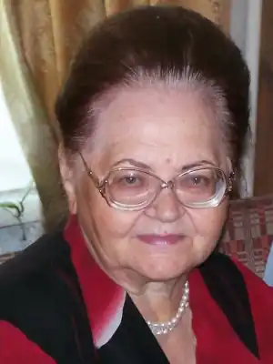

Людмила Павлівна Савчук (Скригуль) народилася 1 жовтня 1935 року в с. Шарівка Ярмолинецького району у сім'ї хліборобів. Там пройшло дитинство, шкільні роки.
Нині вона живе в м. Хмельницькому. Пише для дітей. Її вірші – це ковток джерельної води, прозорої і чистої. Вони невигадливі, образні, щирі, на диво мелодійні, легко запам'ятовуються, дохідливі, прості й мудрі, справжні. Творчий доробок поетеси невеликий, але вагомий.
Людмила Савчук авторка книжок для дітей: "Кенгуреня" (1969), "Вишенька" (1972), "Йде Яринка" (1976), "Один, два, три" (1989, 1991), "Підростай Іваночку" (1990), "Бігла білка" (2002), "Сестричка", "Галя", "Поспитайте у Гриця" (2003), "Я втомилась", "Треба ділитися", "Літо, літечко" (2004), "Котик", "В Україні" (2005). Член Національної Спілки письменників України з 2005 року.